Die Idee
Im realen Leben haben wir ein Bankengeheimnis, ein Briefgeheimnis, Vorhänge vor den Fenstern und geben nicht jedem Pedo auf der Straße unsere Adresse - im Netz interessiert das die wenigsten. Doch wir mögen Kuchen. Und da kurzfristige Belohnung bekanntlich besser wirkt als inhaltliche Argumente versuchen wir es auf diesem Wege.
Du kannst nun aus drei Kategorien wählen: Muffins, Kuchen und Torte. In jeder Kategorie sind Möglichkeiten gelistet, wie du deine Privatsphäre und Sicherheit im Internet erhöhen kannst. Setzt du eine davon in die Tat um, so kannst du dich bei mir melden und einen Wunsch abgeben, was du gern gebacken bekommen hättest. Nach einer erfolgreichen Überprüfung deiner Angaben gehört ein Teil des Kuchens dir.
Muffins
Kalender wechseln
was?
Kalender speichern allerhand Informationen über uns. In erster Linie stellt ein unsicherer Kalender ein
Sicherheitsrisiko dar, da sich aus Terminen Tagesabläufe ableiten lassen, was Stalking und Einbrüche begünstigt.
Integriert der Hersteller zudem noch einen Algorithmus, der deine Daten auswertet, lassen sich weitere Daten
wie deine Adresse, dein Gesundheitszustand und deine sozialen Beziehungen ableiten.
wie?
Drei Kalender, die Wert auf Datenschutz und Sicherheit legen, sind Tuta Calendar,
Etar (Android)
und Fossify Calendar (Android)
Sie lassen sich über den Google Play Store bzw. Apples AppStore herunterladen und sind sychronisierbar mit
anderen Geräten.
Muffins?
- Einrichtung und Nutzung eines Kalenders mit Fokus auf Datenschutz und Sicherheit, zB. Tuta Calendar, Proton Calendar, Etar oder Fossify Calendar
neben Whatsapp einen zusätzlichen Messenger installieren
was?
Messenger sind meist Apps, die über das Internet Nachichten versenden. Das bekannteste Beispiel
dafür ist Whatsapp. Whatsapp erhebt viele private Daten und leitet sie an seinen Mutterkonzern Meta weiter
und von dort aus in die ganze Welt.
Viele weitere Messenger bieten die selben oder ähnliche Funktionen wie Whatsapp, ohne dass sie
so viele Daten speichern, die technisch nicht notwendig sind. Der Grund, weshalb Whatsapp sich weiterhin
derart vielen Nutzern erfreut ist, dass man viele Menschen eben nur über diesen Dienst erreicht. Durch die
Installation eines zusätzlichen Messengers wirkst du der Stellung Whatsapps entgegen.
wie?
Ich empfehle aus persönlicher Erfahrung Threema (kostenpflichtig)
und Signal. Threema funktioniert wie auch der Dienst
Element ohne Telefonnummer, erfordert jedoch im Gegensatz
zu Element noch die Installation einer App. Alle drei sind über den Google Play Store und Apples App Store herunterladbar.
Muffins?
- Installation und Einrichtung eines zusätzlichen Messengers mit Fokus auf Sicherheit und Datenschutz, zB: Threema, Signal, Element (oder Briar ;)
Zwei-Faktor-Authentifizierung
Alle drei Minuten wird ein Account im Internet geknackt - eine Zwei-Faktor-Authetifizierung kann die Chance dafür auf nahezu Null senken.
was?
Üblicherweise authentifiziert man sich nur mit einem Passwort, also mit einem Faktor.
Fügt man jetzt noch einen zweiten Faktor hinzu, wie beispielsweise eine Bestätigung
per App oder per Einmalcode, so spricht man von einer Zwei-Faktor-Authentifizierung,
auch 2FA.
Am gebräuchchlisten sind dabei Einmal-Codes (oder auch One-Time-Passwort/ OTP): Für jeden
Login gibt man nicht nur ein Passwort sondern auch einen sechsstelligen Zahlencode ein. Selbst
wenn jemand dein Passwort errät ist die Wahrscheinlichkeit minimal, dass der Angreifer den
Einmal-Code errät, der alle 30 Sekunden neu generiert wird.
wie?
Für jeden Account richtet man eine eigene 2FA ein. Nicht alle Dienste unterstützen 2FA.
Die Einrichtung dauert nur wenige Minuten und läuft typischerweise so ab:
- Installiere dir eine App zum Berechnen der Einmal-Codes, zB: FreeOTP oder FreeOTP Plus
- Logge dich in den zu sichernden Account ein und gehe in die Accounteinstellungen -> Sicherheit -> Zwei-Faktor-Authentifizierung und bestätige.
- Meist musst du einen QR-Code scannen oder einen Link klicken. Dann wird 2FA automatisch
der App hinzugefügt. Was wenn nicht?
Alternativ kannst du das 16-stelligen Geheimnis/Secret auch manuell kopieren und in der OTP-App in einem neuen Eintrag speichern. - Kopiere den ersten Einmal-Code und gebe ihn der Website zur Überprüfung
Muffins?
- 2FA für mindestens zwei Accounts aktiviert
- 2FA für den E-Mail-Dienst deiner Haupt-Emailadresse in Nutzung
Kartenanbieter wechseln
was?
Die meistgenutzten digitalen Kartenanbieter sind derzeit Google Maps und Apple Maps.
„Openstreetmap“ ist ein internationales Gemeinschaftsprojekt, dessen Karten jeder einlesen und
bearbeiten kann, was sie besonders detailreich und aktuell hält. Zudem verdient das Projekt kein Geld mit der Auswertung deiner Daten. Da die Karten
frei einsehbar sind, gibt es viele verschiedene Apps zur Anzeige und Navigation. Ich nutze OrganicMaps,
dessen Funktionen und Design mir am besten gefallen.
Die App bietet weitere Vorteile: ganz Deutschland kann kartografisch für 4 GB Speicher heruntergeladen werden.
Dies ermöglicht auch eine Offline-Navigation.
wie?
Installiere dir die App „Organic Maps“ über den AppStore, den Google Play Store
oder F-Droid. Zoome in ein Gebiet und klicke auf „Karte herunterladen“.
Muffins?
- Installation einer App zur Nutzung von OpenStreetMap, zB.: Organic Maps, Magic Earth oder OsmAnd
- Nutzung der App > Nutzung von Google Maps/Apple
regelmäßiges Backup
„Kein Backup, kein Mitleid“ - eines meiner Lieblingssprüchwörter aus den IT-Kreisen.
was?
Ein Backup ist eine Datensicherung. Man speichert also Fotos, Telefonnummern und andere Daten an einem
zweiten Ort, damit man sie nicht verliert, geht das Handy kaputt. Großen Diensten wie Google oder Apple
seine Daten anzuvertrauen ist nicht nur aus datenschutztechnischer Perspektive ungeeignet. Auch stellen
deren Server größere Angriffsziele für Hacker dar. Daher gehen zB. bei Google gesichterte Daten immer
wieder verloren.
Deutlich sicherer und datensparsamer sind Dienste von Dezentralität und open-source (siehe
weiter unten).
wie?
Die einfachste und sicherste Variante um Daten zu sichern ist immernoch, offline eine Kopie auf einen
USB-Stick oder eine externe Festplatte zu schieben. Folgend habe ich einige Dienste gelistet, die ihre
Backups online speichern:
| Datum | App |
| Fotos und Videos | Ente |
| Kontakte | EteSync |
| andere Dateien, zB. einzelne Ordner | Filen |
| Passwörter | verschlüsselt als Datei (siehe oben) |
Muffins?
- automatisches Backup eingerichtet oder regelmäßig manuell sichern
- Backup verschlüsselt
Kuchen
E-Mail-Anbieter wechseln
was?
Bei vielen Diensten bei denen du registriert bist, kannst du dein Passwort über deine E-Mail zurücksetzen.
Hat jemand Zugriff auf dein E-Mail-Postfach, hat er somit auch Zugriff auf viele andere deiner Accounts im Internet.
Weiter hat dein E-Mail-Anbieter meist vollen Zugriff auf deine E-Mails und kann daraus automatisiert
folgendes ableiten. wie?
- deine sozialen Beziehungen
- dein Gesundheitszustand
- dein Einkaufspräferenzen
- deine politischen Ansichten
- deine sexuelle Orientierung
- deinen Beruf und Informationen zu Vertragsabschlüssen und -details
| Datum | Ursprung/ Anzeichen |
| soziale Beziehungen | Absender und Empfänger, Absendeuhrzeit, Häufigkeit, Länge und Schlüsselworte |
| Gesundheitszustand | Krankenkassen oder Arztpraxen als Absender, Häufigkeit, Schlüssworte |
| Einkaufspräferenzen | Registrierungen bei Shopping-Diensten, Kaufbestätigungen |
| politische Ansichten | Registrierungen bei Petitionsdiensten, Newsletter dieser, Newsletter von Zeitungen o.ä., Schlüsselworte |
Das sind alles Informationen, die man auch aus anderen Applikationen wie deinem Kalender oder Instagram-Account ableiten kann. Über deinen E-Mail-Verkehr gelingt dies jedoch zuverlässiger.
wie?
- Registriere dich bei einem E-Mail-Anbieter mit Fokus auf Sicherheit und Datenschutz, zB. Tuta oder Proton
- Richte ggf. bei deinem bisherigen Anbieter eine E-Mail-Weiterleitung ein. Das geht meist unter Account -> Einstellungen -> E-Mail -> Weiterleitung
Kuchen?
- bei einem E-Mail-Anbieter mit Fokus auf Sicherheit und Datenschutz registriert
- ggf. E-Mail-Weiterleitung eingerichtet
Browser wechseln
was?
Mit einem Browser öffnest du Websites - nicht zu verwechseln mit Suchmaschinen, mit denen du zunächst
über Stichworte nach einer Website suchst. Die am weit verbreitesten Browser sind Google Chrome, Safari,
Edge und DuckDuckGo. Zu den bekanntesten Suchmaschinen gehört Google Search, Microsoft Bing, Ecosia und
DuckDuckGo.
Neben der Wahl einer seriösen Suchmaschine spielt auch der Browser eine wichtige Rolle. Da er ein
Tor zum Internet ist, lässt sich über ihn bestimmen, welche Daten du mit den Websites und dem Browser
selbst teilst.
wie?
Brave (Browser) und Brave Search (Suchmaschine) müssen keine nicht-notwendigen Daten
über dich speichern und können Tracker und Werbung der Websites blockieren. In den meisten Fällen kannst du
die Website vollfunktionstüchtig nutzen. Er ist über den Google Playstore und Apples AppStore
herunterladbar und steht auch Windows- und Mac-Usern zur Verfügung.
Kuchen?
zwei Open-Source-Apps
was?
Im Quellcode einer App oder Website steht geschrieben, wie das Programmm funktioniert. Beispielsweise sagt der Code dass ein Kalender
angezeigt wird und darin die einzelnen Termine, aber
auch dass Daten gespeichert, analysiert und weitergegeben werden.
„Open-Source“ bedeutet quelloffen - jeder kann den Quellcode einsehen, Probleme melden und daran mitarbeiten.
Das macht das Programm sicherer, da Fehler schneller auffallen. Die Transparenz sorgt auch dafür, dass es schwerer ist,
heimlich Daten zu sammeln und zu verkaufen. Die meisten Entwickler dieser Apps legen viel Wert auf Datenschutz.
wie?
Auf Android und Windows gibt es drei Wege eine App mit offenem Quellcode zu installieren. Wenn du ein iPhone oder Macl
besitzt, ist ohne eine tiefere Recherche nur Option 1 für dich einfach umsetzbar. Um zu prüfen, ob eine App wirklich open-source
ist, kannst du auf der Website des Projektes/Herstellers den Quellcode suchen. Häufig ist er unter "Github" zu finden.
Wichtig: es ist schwer, ohne weiteres Know-How Apps aus fremden Quellen auf Echtheit und Integrität zu überprüfen. Sei dir bewusst, dass mit jeder App,l deren Quelle du nicht kennst, ein Risiko einhergeht. Hole dir im Zweifelsfall Meinung von außerhalb und installiere kein Programm, dem du nicht vertrauen kannst. Bitte lade auch keine Programme von Vergleichs- oder Testseiten wie chip.de herunter. Mehr erfahren
Mit jeder Installation eines Programms oder einer App entsteht ein Sicherheitsrisiko. Selbst im Google PlayStore und auch im AppStore tauchen regelmäßige gefälschte Apps auf.
Das Risiko, Malware zu installieren, ist in den vorinstallierten Appstores der Hersteller dennoch deutlich geringer.
Überprüfe daher am besten jedes Programm auf Kritiken und Beurteilungen von außerhalb.
Überprüfe ebenfalls die Domain auf ihre Echtheit, bspw. kannst du in Wikipedia die offizielle Domain des Projektes aufsuchen.
Windows:
Aufgrund der Komplexität und Funktionsweise von Windows stellt Malware dort ein besonders großes Risiko dar. Typische Angriffsszenarien reichen von heimlicher Datenverarbeitung (Sammeln, Analysieren und Verkaufen von persönlichen Informationen) über das Auslesen von Passwörtern bis hin zur Verschlüsselung ganzer Systempartitionen zur Erpressung (Ransomware).
Android:
Auf mobilen Geräten wie Android ist das Risiko in den allermeisten Fällen begrenzt, da Apps dort im sogenannten „Sandbox-Modus“ laufen. Das heißt, dass sie nur auf ihre eigenen Dateien Zugriff haben und andere Apps oder Teile des Gerätes nicht beeinflussen können. Dennoch birgt Malware zwei Angriffspfade:
- du gibst persönliche Informationen innerhalb der App Preis
- du gibst der App weitere Berechtigungen, wie bspw. Speicherzugriff oder das Mitlesen von Bildschirminhalten
Um eine vermeintliche Open-Source-App auf Echtheit und Integrität zu überprüfen hast du folgende Möglichkeiten: Häufig laufen quelloffene Projekte über die Plattform "Github". Suche daher nach dem Quellcode der App oder nach Github über die Website des Projektes/ Herstellers. Schau dir nun folgende Merkmale an:
- Arbeiten mehrere Personen an dem Projekt mit? ("Mitwirkende")
- Verfolgen mehrere Personen die Projektänderungen? ("Beobachter")
- Werden regelmäßig Updates ausgegeben? ("Versionen"
- Hat das Projekt viele positive Bewertungen erhaltem ("Sterne")
Umso mehr Mitwirkende und regelmäßigere, neue Versionen, umso sicherer ist das angebotene Programm.
- Google PlayStore / Apples AppStore:
Suche im Internet nach "[deine App] open-source" und finde die Website des Projektes/Herstellers. Falls die App auch über den GPlayStore oder AppStore angeboten wird, verlinkt die Website dahin. Dort kannst du sie installieren. - Windows:
Suche im Internet nach "[deine App] open-source" und finde die Website des Projektes/Herstellers. Dort steht meist unter "Download" beschrieben, wie du das Programm installierst. Meist musst du dafür eine .exe, .zip oder .msi herunterladen und öffnen. - Android ohne GPlayStore:
Suche im Internet nach "[deine App] open-source" und finde die Website des Projektes/Herstellers. Um eine App auf Android ohne den GPlayStore zu installieren, musst du zunächst eine Installationsdatei der App herunterladen. Sie hat das Format apk. Klicke sie anschließend in deinem Dateimanager (Dateimanager/ Files / Downloads) an und bestätige dass der Dateimanager Apps aus unbekannten Quellen installieren darf. Öffne sie erneut. - Android ohne GPlayStore:
Für Android gibt es den alternativen AppStore F-Droid. Du kannst ihn dir als .apk installieren. Einmal eingerichtet kannst du über ihn unkompliziert neue Apps installieren. Alle in ihm angebotenen Apps sind nicht nur open-source, sondern auch auf ihre Sicherheit überprüft.
Kuchen?
- zwei Open-source Apps installiert und in Nutzung
TikTok oder Instagram oder Facebook verlassen
Liest du folgend von TikTok, ist es gleichzusetzen mit Instagram und Facebook.
was?
TikTok erhebt jede Menge Daten über dich. TikTok fördert Sucht, vermittelt Desinformation, beinhaltet gefährliche Trends,
und schürt gesellschafltiche Spaltung wie extremistische Positionen.
Der Grund, weshalb ich Kuchen gegen das Netzwerk biete ist jedoch ein anderer: TikTok beeinträchtig zu stark die psychische
Gesundheit seiner Nutzer. „Bereits nach 20 Minuten Nutzung stiegen die Depressionswerte um 12% und die Angstwerte um 15%“ (übersetzt)
.
Das rechtfertigt keine gute Unterhaltung.
wie?
- Melde dich in der App oder der Webversion von TikTok an
- Gehe unter Account-Einstellungen -> Account löschen
- Lösche die App von deinen Geräten
- optional: blockiere die Domain tiktok.com in deinem Browser oder auf deinem Gerät, um TikTok nicht als Website nutzen zu können. Wie geht das?
über eine private DNS tiktok.com auf die Blocklist setzen
iPhone/Mac
- Geräte-Einstellungen
- Bildschirmzeit
- Beschränkungen
- App Store, Medien, Web & Spiele
- Webinhalt
- Nie erlauben
- Website hinzufügen: tiktok.com
Google Chrome, Microsoft Edge, Ecosia und DuckDuckGo Browser
- Installiere eine Erweiterung wie
BlockSite

über den den Chrome Web Store (alle oben genannten Browser basieren auf Chromium) - Öffne tiktok.com und klicke auf das Erweiterungssymbol in der oberen rechten Ecke und im Popup-Fenster auf „Diese Seite blockieren“
Brave
- Einstellungen
- Schutz & Datenschutz
- Inhaltsfilterung
- Benutzerdefinierter Filter
- ||tiktok.com^ eingeben
Microsoft Edge
- Einstellungen
- Website-Berechtigungen
- Cookies und Websitedaten
- Blockieren
- Hinzufügen: tiktok.com
Kuchen und Props?
- Du hast deinen Account bei TikTok gelöscht und ggf. die App deinstalliert
- optional: du hast die Domain tiktok.com in deinem Browser blockiert
Die selben Bedingungen gelten auch für Instagram und Facebook.
private DNS nutzen
Mittels einer privaten DNS umgehst du Zensur, blockierst Werbung und Tracking - auf dem gesamten Gerät. Du erlangst mehr Freiheit und Nerven, sparst zudem noch Datenvolumen.
was?
Websites sind auf Servern gespeichert. Jeder Server hat eine eindeutige Nummer,
genannt IP-Adresse. Weil diese schwer zu merken sind, übersetzt ein DNS diese Nummern
in Worte: Domains.
91.90.167.233 -> lernsax.de
Wenn Staaten Websites sperren, „löschen“ sie den Eintrag der Website im DNS und dein
Browser sagt dir nur: "404 - not found". Mit einer selbstfestgelegten DNS kannst
du diese Sperren ignorieren.
Außerdem: jede Verbindung die dein Handy mit dem Internet aufnimmt, geht durch dieses
System, auch Werbe- und Tracking-Anfragen. Mit einer privaten DNS kannst du sie
herausfiltern. Die Verbindungen werden ganz verhindert, was dich auch mobile
Daten spart.
Es gibt Organisationen, die große Filterlisten gegen Werbung und Tracker zusammenstellen und Apps, mit denen du diese Filter für dein Gerät einschalten kannst.
Android
- Registriere dich auf nextdns.io/de
- Füge deinem Profil einige Filterlisten hinzu. Ich nutze HaGeZi - Multi PRO, OISD und 1Hosts (Lite)
- Kopiere die URL unter DNS-over-TLS/QUIC
- Gehe in deine Handyeinstellungen -> mehr Verbindungsoptionen/Netzwerk und Internet/Erweitert -> private DNS (oder suche nach "Private DNS") und kopiere die URL in das enstprechende Feld
iPhone
- Registriere dich auf nextdns.io/de
- Füge deinem Profil einige Filterlisten hinzu. Ich nutze HaGeZi, Multi PRO, OISD und 1Hosts (Lite)
- Kopiere die URL unter DNS-over-TLS/QUIC
- Gehe in deine Handyeinstellungen -> Wlan-Einstellungen -> blaues "i" neben "mein Netzwerk" -> DNS konfigurieren -> manuell kofigurieren und kopiere die URL in das enstprechende Feld
Brave Browser
- Registriere dich auf nextdns.io/de
- Füge deinem Profil einige Filterlisten hinzu. Ich nutze HaGeZi, Multi PRO, OISD und 1Hosts (Lite)
- Kopiere die URL unter DNS-over-TLS/QUIC
- Gehe in deine Browser-Einstellungen -> Brave Schutz und Datenschutz -> Sicheres DNS verwenden -> anderen Anbieter verwenden und kopiere die URL in das Feld „Anbieter-URL“ verwenden
Kuchen?
- private DNS eingerichtet und genutzt (min. ein Gerät/drei Tage)
- Nutzung von Filterlisten gegen Tracking
- Nutzung eines sicheren und datenschutzfreundlichen DNS-Providers, bspw. NextDNS, Mullvad DNS (auch ohne Account) oder RethinkDNS
Torte
zufällige Passwörter mittels Passwortmanager
Im Jahr 2025 wurden weltweit rund 425,7 Millionen Accounts im Internet geknackt, was 14 jede Sekunde entspricht - ein zu großer Teil davon aufgrund zu schwacher Passwörter.
was?
Heute braucht es keinen Agenten mehr, der speziell dich im Visier hat, um dein Passwort zu knacken. Auf
Instagram beispielsweise erfolgen die Angriffe zufällig. Es braucht für den Angriff keinen Menschen:
eine Software gibt ein Passwort ein und klickt "Einloggen". Funktioniert das nicht, probiert sie ein weiteres.
Ziel ist auf dieser Plattform meist, auf deinem Account Werbung für ein Produkt zu machen. Ich persönlich kenne zwei
Menschen, denen das passiert ist.
Es ist wichtig, ein langes Passwort zu wählen, da Angreifer sehr viele Zeichenkombinationen
für dein Kennwort durchprobieren können (gern mehrere Hundert Milliarden bis Billionen Kombinationen pro Sekunde). Bitte wähle kein Passwort unter zwölf Zeichen.
Weiter testen Angreifer bekannte Kombinationen zuerst. Du senkst die Wahrscheinlichkeit dafür, dass dein
Passwort erraten wird, erheblich, indem du es zufällig generieren lässt.
wie?
Es gibt verschiedene Apps, mit denen du zufällige Kennwörter generieren, speichern und ggf. über mehrere
Geräte synchronisieren kannst. Diese Apps nennt man Passwortmanager.
- Installiere dir einen Passwortmanager, wie zB. KeePass (Android, Windows/Mac, iPhone)
- Erstelle eine neue Datenbank. Zum Verschlüsseln und Entsperren der Datenbank, in der deine Passwörter gespeichert werden, musst du ein besonders sicheres Kennwort anlegen, genannt Hauptschlüssel. Merke oder notiere dir diesen Hauptschlüssel
- In KeePass kannst du Passwörter generieren lassen. Ich verwende dazu eine eigene Website: honest-entropie.github.io. Generiere ein Passwort und setze es für einen Account ein
- Speichere das neue Passwort und den Namen des Accounts im Passwortmanager
- Speichere deine Datenbank im Telefon- oder Computerspeicher und speichere eine Kopie auf einem USB-Stick oder externen Festplatte, falls dein Handy/Computer kaputt geht
Torte?
- Passwortmanager mit Fokus auf Sicherheit und Datenschutz eingerichtet, zB. KeePass, Bitwarden oder Proton Pass (Kennwörter die man sich merken kann sind unsicher)
- min. drei Passwörter in Datenbank gespeichert und in min. drei Accounts aktiv
- Kopie der Datenbank angelegt
alternatives Betriebsystem
Die allermeisten Computern die man kauft wollen bereits im Auslieferungszustand „nach Hause telefonieren“. Wie kann man sich von Google oder Apple trennen, wenn das Handy doch von ihnen gebaut wurde? Man überschreibt die Software mit einer anderen.
was?
Handys bestehen aus Hardware und Software. Ein Teil der Software nennt man Betriebssystem,
welches typischerweise vom Verkäufer, stammt. Kaufe ich ei n Handy von Samsung, so ist
darauf Software von Samsung. Dieses Betriebssystem kann ich gegen ein anderes tauschen.
Große Communitys haben eigene Betriebssysteme erstellt, die mehrere Vorteile bieten:
- Die Software läuft auch auf alten Geräten, für die die Hersteller Udpates bereits eingestellt haben
- Die Software ist "open source" - jeder kann sie auf Fehler überprüfen und mitschreiben. Das macht sie besonders sicher
- Die Software ist anpassbar. Man kann sie zum Beispiel vollständig ohne Google nutzen
...google mal.
Android
Die größten Communitys sind GrapheneOS, LineageOS und /e/. Stichwort zum Recherchieren: Custom-ROM.
iPhone
nur sehr begrenzt verfügbar und deutlich schwieriger. Stichwort zum Recherchieren: Jailbreak
Windows
In allerlei Software stecken Komponenten des Grundsystems Linux. Ganze Betriebssysteme die auf Linux basieren,
nennt man Distributionen. Die bekanntesten Familien sind Ubuntu, Debian und Arch.
Torte und Props
- Custom-ROM installiert
- optional: Gerät ist intakt
#dutgemacht, #gegenDieZustände
Grafiken von canva und flaticon.com:
Dave Gandy,
meaicon,
Reynaldo Pratama,
und allsom